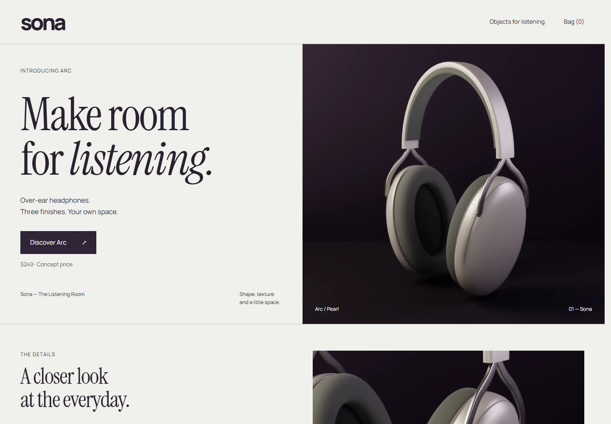
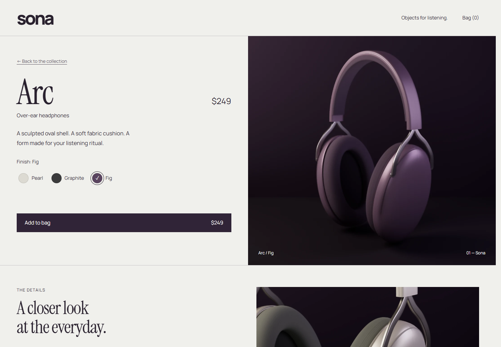
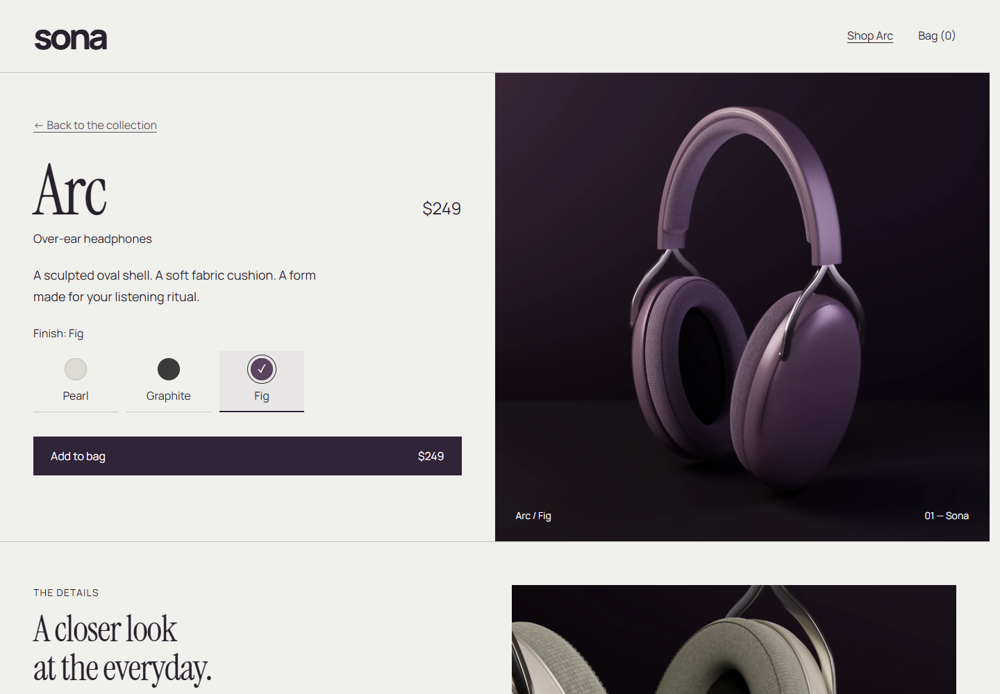
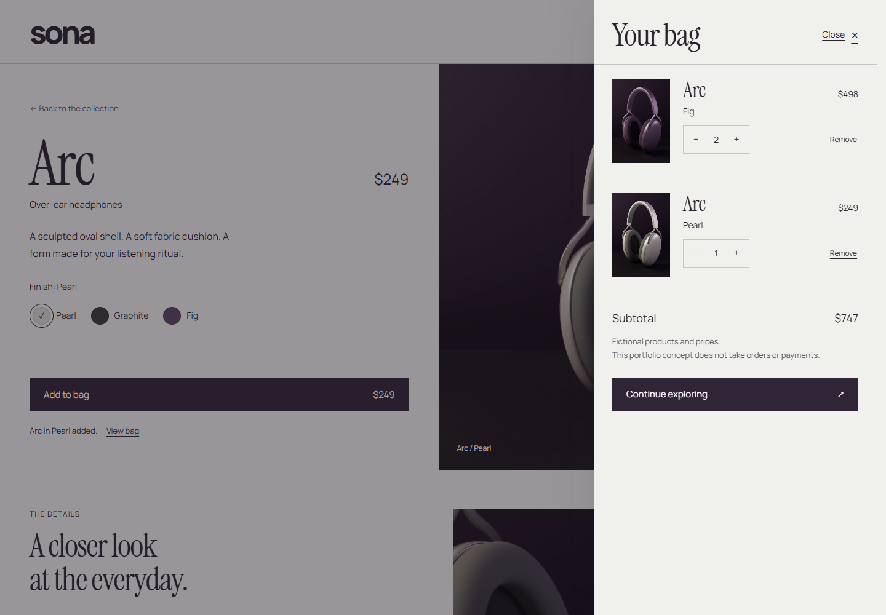
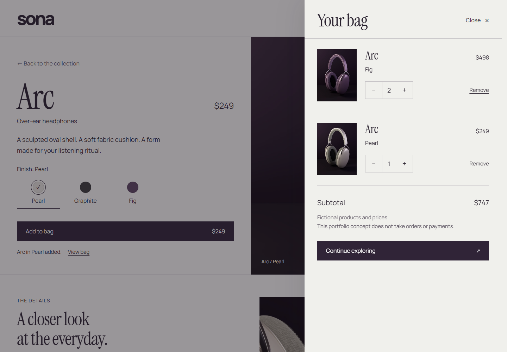
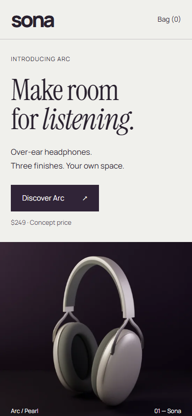
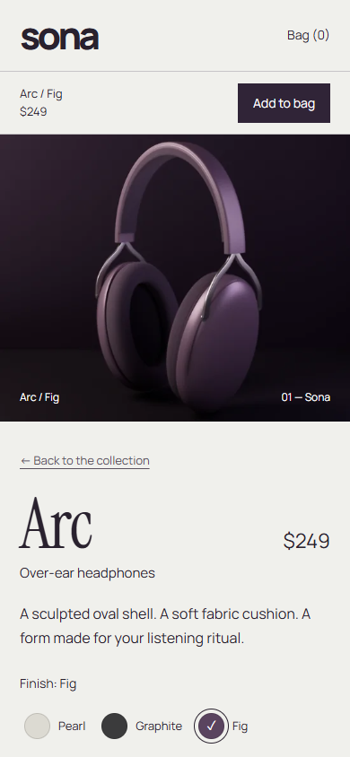
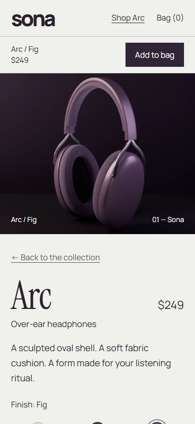
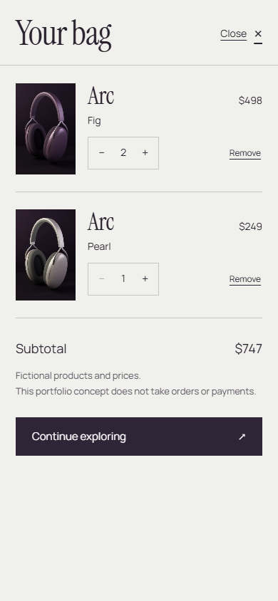
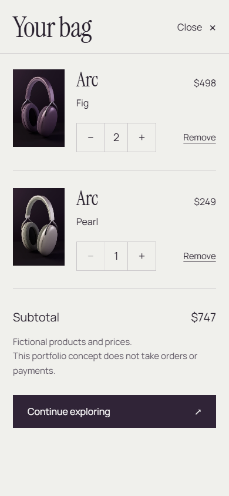

Sona · Local milestone refinement
The same journey.
A more considered finish.
Before and after captures of the working homepage, Arc product page, and bag. The refinement keeps Sona’s plum-and-pearl palette and serif typography while improving reading, shopping controls, product materials, and the phone opening.
Captured in Chrome at 100% browser zoom: desktop 1440 × 1000 and phone 390 × 844, with viewport scale 1. Images below are proportionally scaled to fit this gallery and are never cropped. Open an image to inspect its original pixel dimensions. Phone captures use an emulated viewport.
Measured in the browser
| Element | Desktop · before → after | Phone · before → after |
|---|---|---|
| Homepage body text | 16 → 18 px | 16 → 17 px |
| Navigation | 14 → 16 px | 14 → 16 px |
| Finish labels | 14 → 16 px | 13 → 16 px |
| Quantity button width | 40 → 48 px | 37 → 48 px |
| Bag panel width | 460 → 560 px | Full viewport width |
| Homepage product top | — | 490.64 → 399.66 px · about 91 px sooner |
01 / Desktop opening
1440 × 1000 capture · 100% browser zoom



Readable navigation and body copy accompany the original composition. The refined product render adds visible fabric, padding, seam detail, and material contrast.
02 / Desktop Arc
Fig selected · 1440 × 1000 capture




Larger finish labels and purchase controls give the selection area more breathing room. The full-page captures show the new purpose-made cushion macro in place of the repeated detail crop.


03 / Desktop bag
Fig × 2 + Pearl × 1 · illustrative subtotal $747




The wider panel makes room for product details, 48 px quantity controls, and a clearer subtotal without crowding removal actions.
04 / Phone opening
390 × 844 capture · 100% browser zoom



A more compact introduction keeps the expressive headline while bringing the product about 91 px closer to the top of the page.
05 / Phone Arc
Fig selected · 390 × 844 capture




The product and shopping bar stay prominent. Open the complete captures to compare finish selection, purchase controls, and the cushion macro farther down the page.


06 / Phone bag
Fig × 2 + Pearl × 1 · illustrative subtotal $747




The full-width bag uses larger quantity buttons, clearer finish labels, and more space between item details and actions.